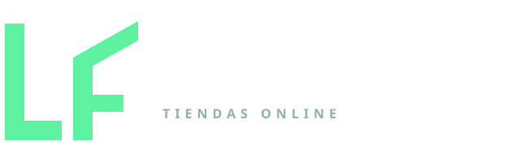
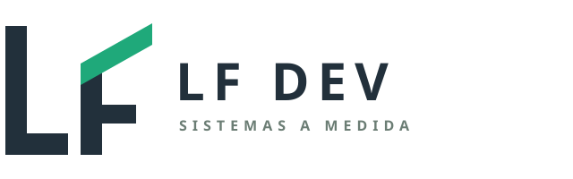
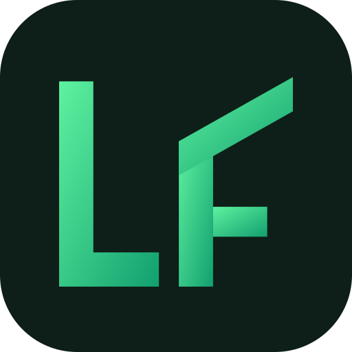
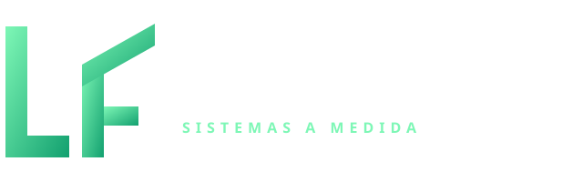
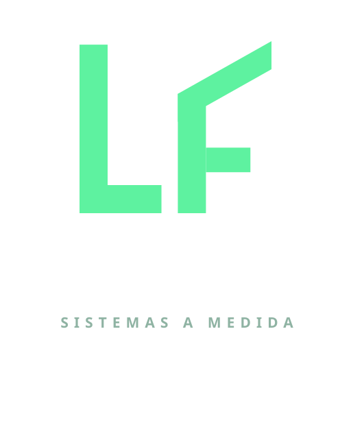

Mismo monograma (L + F con la vela inclinada), cinco terminaciones. Todas las piezas son SVG: se escalan sin perder calidad y pesan menos de 2 KB.
Elegidas: la B para el sitio (con versión oscura para el header) y la C como badge, favicon y foto de perfil. Las demás quedan como alternativas.






Archivos: brand/logo-a-verde-oscuro.svg, logo-b-duotono-claro.svg, logo-b-oscuro.svg, logo-c-badge.svg, logo-d-degradado.svg, logo-e-apilado.svg y mark.svg (monograma suelto, hereda el color con currentColor).